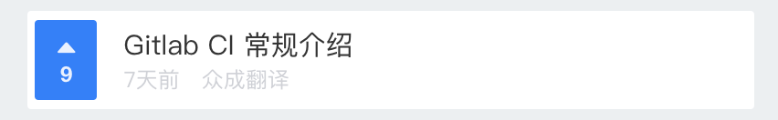

Block(块), Element(元素), Modifier(修饰符)，是一种命名CSS class的模式，使用这种模式可以让 CSS 代码更加利于维护。
.block-name__element-name--modifier-name
团队项目的CSS代码有多人共同开发，每个人的代码风格，习惯大不相同，由于没有统一的规范，在阅读别人或者自己之前写的CSS的时候，要花大量的时间去弄清楚代码的含义，使用BEM就是为了提高团队开发和维护效率。
页面上逻辑和功能独立的，可复用的组件，可以嵌套，但在语义上它们保持平等，可以存在页面上不同的位置或不同项目中，保持样式不变。
任何html元素都可以成为一个Block，不依赖于页面上的其他Block或者Element。
<header class="header"></header>
.header {
padding: 0 20px;
color: #333;
background: #f5f5f5;
}
组成Block的一部分，Block内部的任何元素都与块有关联，不能在块的外部使用。
<article class="article">
<h2 class="article__title"></h2> <!-- element -->
<p class="article__content"></p> <!-- element -->
</article>
.article {
padding: 12px;
}
.article__title {
font-size: 1rem;
}
.article__content {
font-size: .9rem;
}
用来表示块或元素的状态，外观，行为等，可选。
<button class="btn btn--disabled"></button>
.btn {
color: #333;
background-color: #fff;
}
.btn--disabled {
color: #fff;
background-color: #6c757d;
}

<li class="list-item">
<div class="list-item__rank">
<i class="list-item__rank-icon"></i>
<p class="list-item__rank-num">9</p>
</div>
<div class="list-item__content">
<p class="list-item__title">Gitlab CI 常规介绍</p>
<p class="list-item__info">
<small class="list-item__date">7天前</small>
<small class="list-item__author">众成翻译</small>
</p>
</div>
</li>
包裹类： container, wrapper, outer, inner, box, header, footer, main, content, aside, page, section, block
状态类： primary, secondary, success, danger, warning, info, error, link, light, dark, disabled, active, checked, loading
尺寸类： large, middle, small, bigger, smaller
组件类： card, list, picture, carousel, swiper, menu, navs, badge, hint, modal, dialog
文本类： title, desc, content, date, author, category，label，tag
人物类： avatar, name, age, post, intro
BEM 不是必须的，你依然可以选择自己喜欢的方式编写你的 CSS 代码。
使用 BEM 主要目的是为了在团队开发中有一个统一的规范，利于代码的维护，在别人接手你的代码，或者接手别的代码时能够更加快速的理解代码。